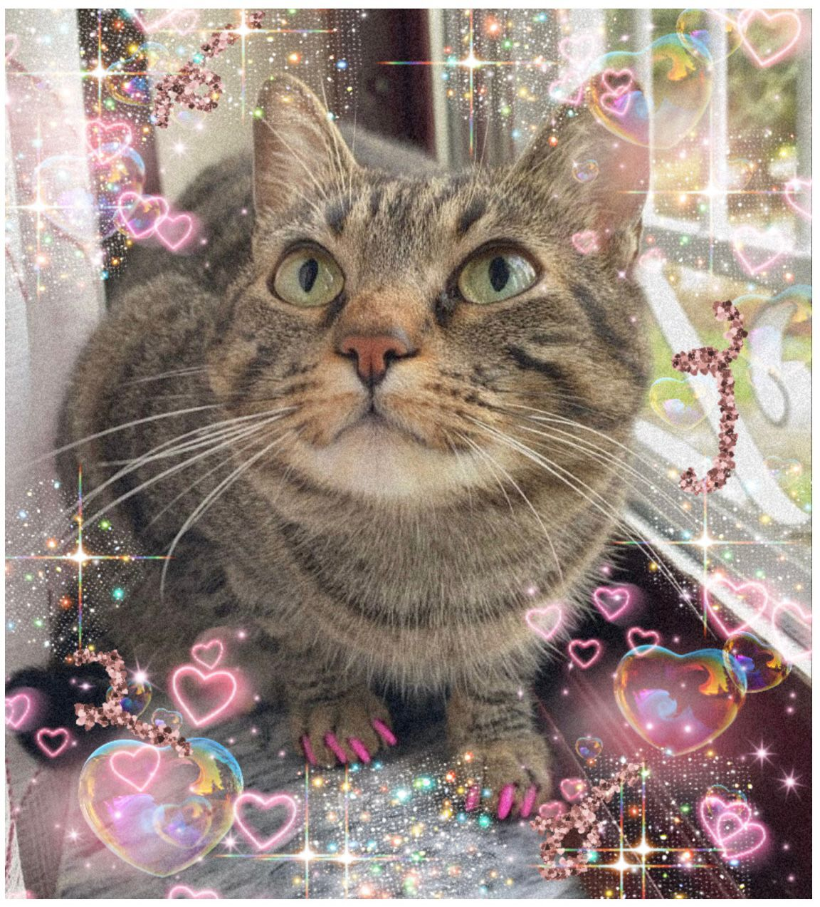
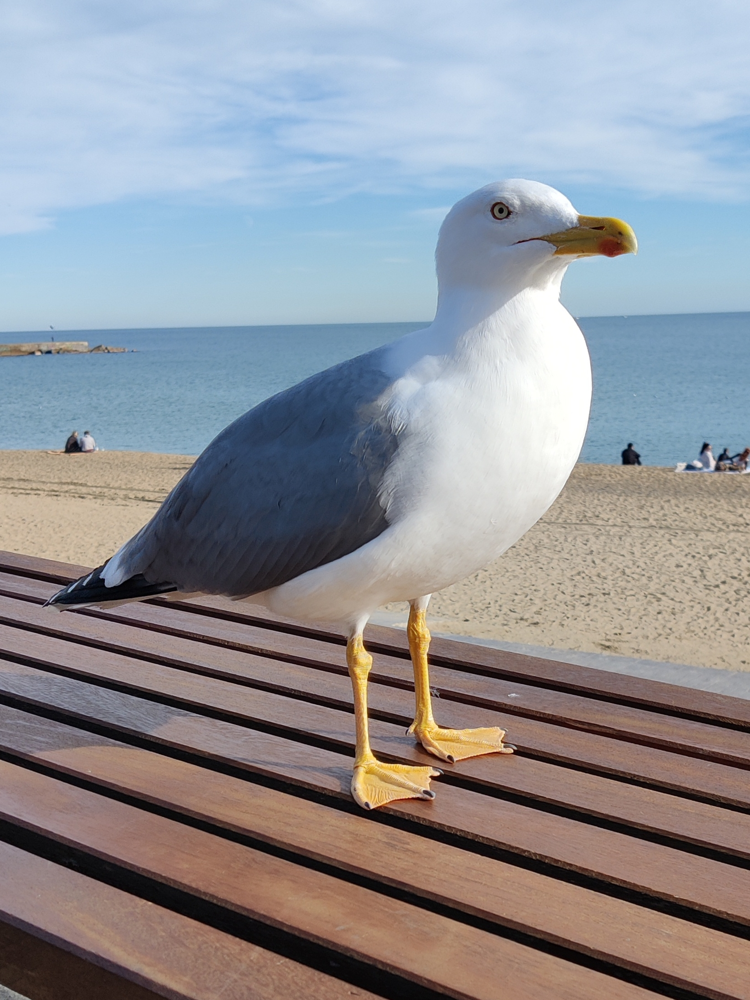

| Inês BARREIROS | CHEN | Ihsane GHAMMATT | Yifan MIAO |
|---|---|---|---|
|  |  | ||
| Sou licenciada em línguas literaturas e culturas na Faculdade de letras da Universidade de Lisboa. Trabalhei durante 1 ano como assistente de língua portuguesa em França. Atualmente estou a fazer um mestrado em TAL para expandir os meus conhecimentos línguisticos e ter bases de informática.. | Passioné de jeux vidéos et de linguitique générative, très chargé par les DM de ce master, peu de temps de m'amuser :(. | À la suite d’une licence en arabe et hébreu à l’Inalco, j’ai travaillé comme professeure de langues au lycée pendant 3 ans. J’ai ensuite choisi de m’orienter vers un master TAL pour renouer avec l’informatique. | J'aime bien le Linux, je n'aime pas le Bash. |
| Hobbies: leitura, crochet, viagens, cinema. | Hobbies: , , ,. | Hobbies: documentaires, lecture, faire la cuisine, voyager. | Hobbies: , , ,. |
| Langues parlées: português,inglês,francês e espanhol. . | Langues parlées: français, anglais, chinois, italien . | Langues parlées: arabe, français, espagnol et hébreu. | Langues parlées: C, C++, Python :) |
| Github | Github | Github | Github |